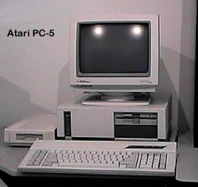

Atari PC-5 Desktop System

Atari was not doing well at
all in the PC compatible field with its existing line of compatibles.
The problem was stemming from the fact that the PC's were custom built
by Atari and were actually too well made and in turn, were too costly.
Atari had to compete against Grey Market PC's makers who were selling PC's
for far less than Atari could possible sell theirs for. So
Atari decided, if you can't beat'em, join'em. They started
selling PC's with generic motherboards in them. The PC-5 was
a 386sx 16mhz system with 5.25" floppy drive, internal 40 MB Seagate ST225
MFM hard disk, Parallel/Serial card and basic 256K VGA adapter.
This system was not quite as nicely built as the PC-1 or any of Atari's
ABC (Atari Basic Computer) computer systems, but it was cheaper to make
and sell. Actually, its quite interesting but Atari mentioned
in several of its ads that their PC-4 and PC-5 systems were capable of
running OS/2 v1.2